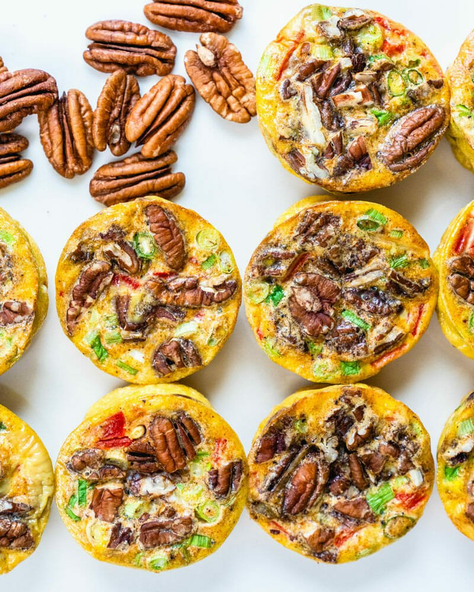

⅓ cup shredded Parmesan cheese (or shredded cheese of any type)
Butter, for greasing

Instructions
Preheat the oven to 350 degrees Fahrenheit.
Grease a 12-cup muffin tin generously with butter.
Roughly chop the pecans. Thinly slice the green onions. Dice the roasted red peppers.
In a medium bowl, whisk together the eggs, milk, garlic powder, smoked paprika, kosher salt, and
a few grinds of black pepper. Divide the mixture evenly into the muffin cups (fill them about
halfway). Sprinkle the shredded Parmesan cheese evenly into each cup. Then top with the green
onions, then the red peppers. Finish by adding the pecans, divided evenly between the cups.
Bake for 20 to 25 minutes until golden brown and puffed. (When you remove them from the oven,
they'll immediately start to deflate and will continue deflating as they cool.) Allow to cool
for 5
minutes in the tin, then remove. Eat immediately, refrigerate up to 4 days, or freeze up to 3
months. They work great as an on-the-go breakfast or lunch, and are good at room temperature or
cold
(don't need to be reheated).